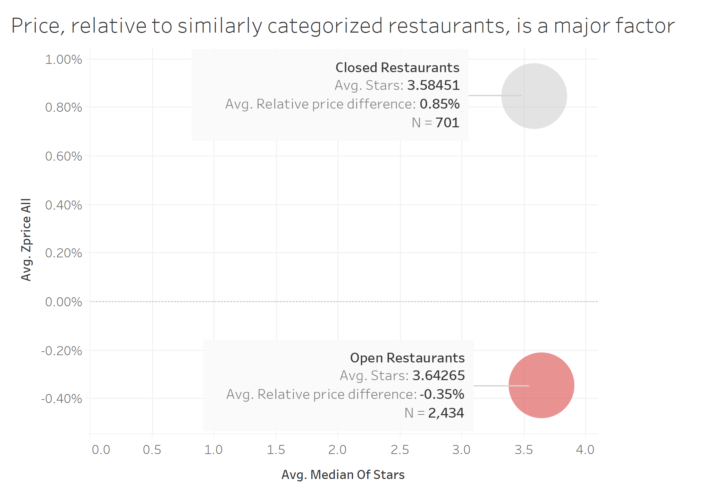

Yelp reviews contain rich data about the place, it's ambience, star rating, photos and other factors. Can this data be used to predict whether a restaurant is going to close? Let's see.
In this series of visualisations, we will walk you through some key factors that influence a restaurant's closure. We use data from Yelp reviews for restaurants in Pheonix, AZ. We will show you both open and closed restaurants to help you understand what is happening.
You might except to see a trend when you look at a map of the city. Maybe the restaurants closing are based more in downtown, maybe they are near an expensive location. Taking a look at the map of Pheonix below, we can't really make out a trend.
One might expect that the restaurants that have closed are all the ones with a low star ratings. After all, when we don't like a place we leave a low rating and the restaurant loses business. However, this is not the case! Star ratings of closed restarants vary across the spectrum!
One might expect that price is a good indicator for predicting closure. This is somewhat true. The absolute price DOES NOT matter. That is to say it's easually likely for an expensive and a cheap restaurant to close down. However, relative price matters (relative to it's neighbours within 1 mile radius). Thus, expensive restaurants in areas with cheaper restaurants are more likely to close.
Relative Review Count is an indicator of the number of reviews recieved relative to the restaurant's neighbours that are within a 1 mile radius. This is a good predictor of restaurant closure.
What does matter is the density of restaurants. If a restaurant is in an area which a many other restaurants (ex: downtown), it has a high rate of closure. This makes sense since it faces severe competition from it's neighbours.
However, there is an interesting behaviour here. If we compare restaurant density of similar restaraunts (ex: chinatown), we don't see the earlier behaviour. Our graphs change to show that if a restaurant is in an area where other similar restarants exist, it is less likely to close.